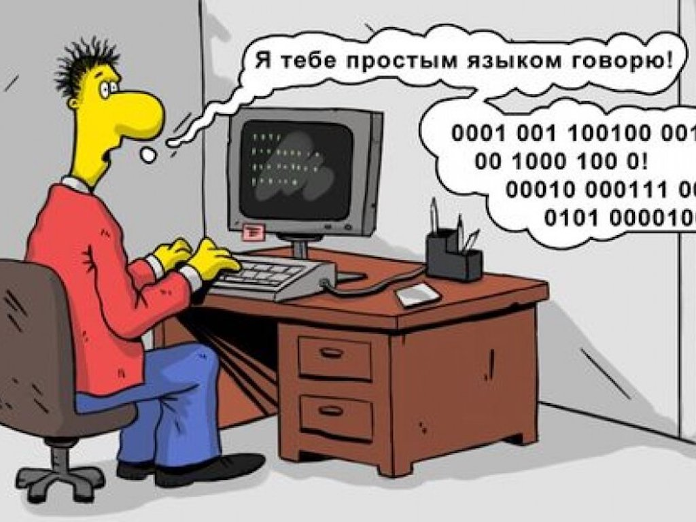
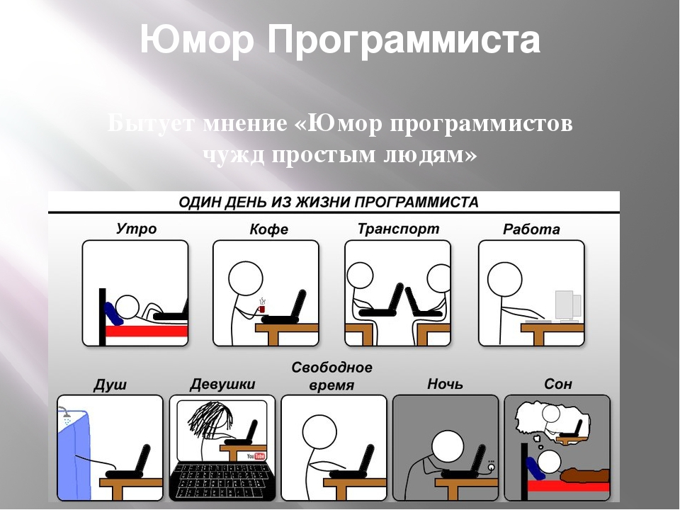

Свежие анекдоты Про программистов
Небольшая подборка анекдотов и потешных историй о программистах и компьютерах поможет вам немного расслабиться после утомительных уроков и напутствий…))
- Element 1
- Element 2
- Element 3
- Element 1
- Element 2
- Element 3
- Короткие анекдоты
- Карикатуры
- Русский программист
| dog |
chicken |
snake |
| 10kg |
2kg |
3kg |
Короткие анекдоты
Людям физического труда для восстановления своих сил нужен 7-8 часовой ночной сон.
Людям умственного труда нужно спать часов 9-10. Ну а программистов будить нельзя вообще.
*************
Совет программисту. Положив сахар в чай, не размешивайте его до тех пор, пока не дойдёте до
своего компьютера. Та лужа, которую вы сделаете по пути,
будет нелипкая и несладкая, и вы сможете спокойно вытереть её своим носком.
*************+
Попроси программиста проверить 10 строк кода, он найдет 10 проблем. Попроси его проверить 500 строк,
он скажет что выглядит норм.
**************
Джун должен знать все алгоритмы.
Мидл должен знать о существовании всех алгоритмов.
Сеньор должен знать где сидит джун.
**************
Интересный факт: 90% причин поломки компьютера — сидят напротив него.
**************
Производители программного обеспечения США сделали ошеломляющее открытие.
Оказывается, скорость чтения россиян в сотни тысяч раз превышает скорость чтения американцев.
Это стало очевидно после подсчета миллисекунд, за которые среднестатистический россиянин успевает
прочитать пользовательское (лицензионное) соглашение и нажать *СОГЛАСЕН*.
Карикатуры


Русский программист
Любой русский программист, после пары минут чтения кода, обязательно вскочит и произнесет, обращаясь к себе:
переписать это все нафиг. Потом в нем шевельнется сомнение в том, сколько времени это займет, и остаток дня
русский программист потратит на то, что будет доказывать самому себе, что это только кажется, что переписать
это много работы. А если взяться и посидеть немного, то все получится. Зато код будет красивый и правильный.
На следующее утро русский программист свеж, доволен собой и без единой запинки докладывает начальству, что
переписать этот кусок займет один день, не больше. Да, не больше. Ну, в крайнем случае, два, если учесть все
риски. В итоге начальство даст ему неделю, и через полгода процесс будет успешно завершен. До той поры, пока этот
код не увидит другой русский программист.
А в это время, в соседних четырех кубиках, будет ни на секунду не утихать работа китайских программистов,
непостижимым образом умудряющихся прийти раньше русского программиста, уйти позже, и при этом сделать примерно
втрое меньше. Эта четверка давно не пишет никакого кода, а только поддерживает код, написанный в свое время
индусом, и дважды переписанный двумя разными русскими. В этом коде не просто живут баги. Здесь их гнездо.
Это гнездо постоянно воспроизводит себя при помощи любимой китайской технологии реиспользования кода - copy/paste.
Отсюда баги расползаются в разные стороны посредством статических переменных и переменных, переданных по ссылке
(поскольку, китайский программист не может смириться с неудобствами вызванными тем, что он не может изменить
значение внешней переменной переданной в его функцию модулями, которые переписывает русский программист).
Вспоминая об этой функции русский программист, как правило, на время теряет дар английской речи, и переходит
к какой-то помеси русского и китайского. Он давно мечтает переписать весь кусок, над которым работают китайцы, но у него нет времени.